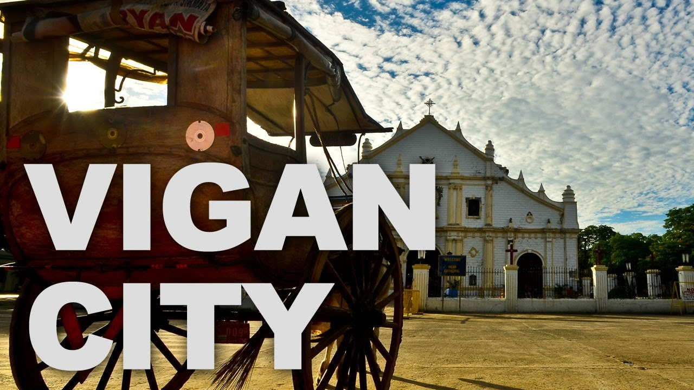

Vigan City, a UNESCO World Heritage Site, is one of the best-preserved Spanish colonial towns in Asia. Known for its cobblestone streets, historic architecture, and vibrant culture, Vigan offers a unique glimpse into the Philippines' colonial past.
Vigan is a UNESCO World Heritage Site known for its well-preserved Spanish colonial architecture.
Vigan was established in the 16th century as a Spanish colonial town. It became a UNESCO World Heritage Site due to its unique blend of Asian and European architecture.
Vigan is famous for its traditional crafts such as Abel Iloko weaving and pottery making. The city celebrates vibrant festivals like the Vigan City Fiesta every January.
Located in Ilocos Sur, Vigan enjoys a tropical climate and is a major cultural and tourism hub in the Philippines.
Vigan is recognized as one of the New7Wonders Cities and remains a top travel destination in the country.
Explore some of Vigan's most famous attractions:
📌 A historic cobblestone street known for its well-preserved Spanish colonial houses, souvenir shops, and traditional kalesa rides.
📍 Calle Crisologo, Vigan City, Ilocos Sur, Philippines
📌 A centuries-old watchtower beside St. Augustine Church in Bantay, offering panoramic views of Vigan.
📍 Bantay, Ilocos Sur, Philippines
📌 Also known as St. Paul Metropolitan Cathedral, this Baroque-style church serves as the seat of the Archdiocese of Nueva Segovia.
📍 Plaza Burgos, Vigan City, Ilocos Sur, Philippines
📌 A traditional pottery-making site where visitors can witness and even try making Vigan’s famous burnay jars.
📍 Brgy. Pagburnayan, Vigan City, Ilocos Sur, Philippines
The Vigan City Government is committed to preserving the city's rich cultural heritage while promoting sustainable development.